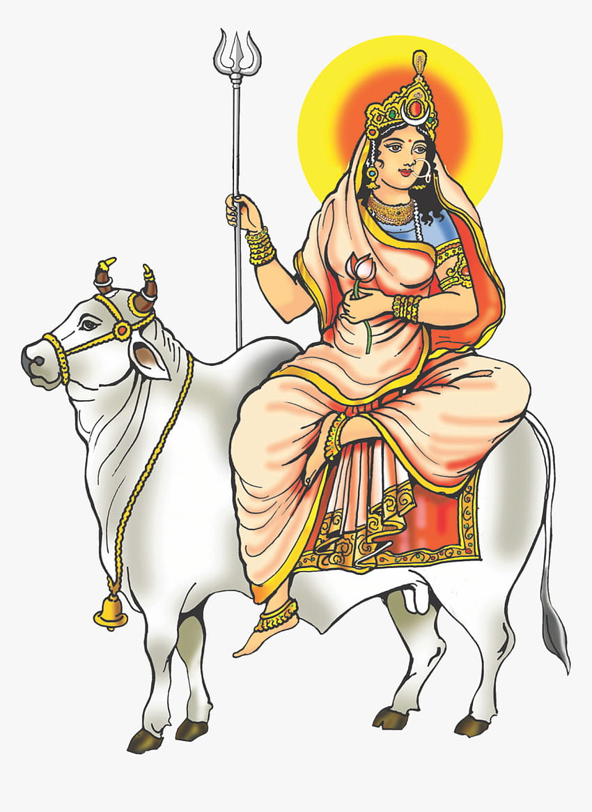

Shailputri, is the daughter of the Mountain King Himavat, and is a menifestation and form of the Hindu mother goddess Mahadevi, representing herself as the pure form of goddess Parvati.She is the first Navdurga venerated during the first day of Navratri, and is a reincarmation of Goddess Sati.

Brahmacharini means a devoted female student who lives in an Ashrama with her Guru along with other students. She is the second aspect of the Navdurga forms of Mahadevi. The Goddess is worshipped on the second day of Navratri. The goddess Brahmacharini wears white clothes, holds a japmala in her right hand and Kamandala, a water utensil in her left hand.
In Hinduism, Chandraghanta is the third Navdurga aspect of goddess Mahadevi. Her name means "one who has a half-moon shaped like a bell." Her third eye is always opened and she is always ready for war against demons. She is also known as Chandrakhanda, Chandrika or Rannchandi. Her worship takes place on the third day of Navratri.
Maa Kushmanda is a Hindu goddess, credited with creating the world woth her divine smile. Her name signals her main role: Ku means "A little", Ushma means "warmth" or "energy" and Anda means "cosmic egg". Kushmanda is worshipped on fourth day of the festival of Navratri and she is believed to improve health and bestow wealth and strength.
Skandmata is the fifth among the Navdurga forms of Mahadevi. Her name comes from Skanda, an alternate name for the war god Kartikeya, and Mata, meaning mother. As one of the Navadurga, the worship of Skandmata takes place on the fifth day of Navratri. Her abode is in Vishuddha chakra.
Katyayni is the sixth aspect of the Navadurga forms of Mahadevi. She is seen as the slayer of the tyrannical demon Mahishasura. She is also the sixth form amongst Navadurga. She may be depicted with four, ten, or eighteen hands.
Kalaratri is the seventh of the nine Navadurga forms of the mother goddess Mahadevi. She is the first referenced in Devi Mahatmya. Kalratri is one of the fearsome forms of the Mother Goddess. Kalaratri is traditionally worshipped during the nine nights of Navratri celebrations. The seventh day of Navaratri pooja.
Mahagauri is the eighth form among the Navadurga aspects of the Hindu mother goddess Mahadevi. She is worshipped on the eighth day of Navratri. According to Hinduism, Mahagauri has the power to fullfill all the desires of her devotees. The one who worships the goddess, gets relief from all the sufferings in life.
Siddhidhatri is the ninth form among the Navadurga aspects of Hindu mother goddess Mahadevi. The meaning of her name is as follows: Siddhi means supernatural power or meditative ability, and Dhatri means giver or awarder. She is worshipped on the ninth day of Navaratri. She fulfills all the divine aspirations.